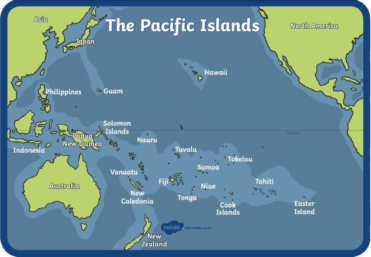
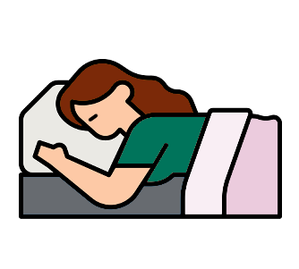

The Effects of Kava: A Natural Elixir for Well-Being
You've likely come across the buzz surrounding kava, a well-known 'alcohol alternative' that's been making waves on a global scale. However, you likely are asking, “What is kava?” and what is the driving force behind its increasing popularity? Delving into this intriguing subject, we'll explore the nature of kava, its origins, its potential benefits, and the reasons it's capturing the attention and curiosity of so many.
What is Kava?
So what is kava? Well, kava (kaa-vuh) is a root-derived traditional beverage related to the pepper family that is native to the South Pacific islands where it has been consumed for centuries as a ceremonial and social drink. The taste of kava is earthy and unique, with a slight numbing sensation on the tongue and lips.
Kava’s Origin Story
Kava has an ancient and culturally rich origin that can be traced back thousands of years to the Pacific region encompassing countries like Fiji, Vanuatu, Tonga, and Samoa, as well as other parts of the South Pacific.  The indigenous peoples of these islands, particularly in Vanuatu, are believed to be the earliest cultivators and users of kava. Legend has it that kava was a gift from the gods, revered for its soothing and mind-altering properties.
According to traditional narratives, kava was first introduced to humanity by a divine figure or ancestral spirit. This mythical figure brought the kava plant to the people as a symbol of peace, unity, and a means to foster social and communal connections. As the legend goes, the plant was revered for its ability to induce a sense of tranquility, reduce anxiety, and encourage harmonious interactions within the community.
Over time, the consumption of kava became an integral part of ceremonies, rituals, and social gatherings, forming a crucial aspect of Pacific Islander cultures and traditions. Today, kava continues to hold deep cultural significance and remains an essential part of social and ceremonial practices in many Pacific Island societies.
How is Kava Served?
Due to its cultural significance, there are various ways kava can be served in correspondence to the setting. After all, the traditional and modern ways of drinking kava differ in a few ways.
Traditional
The traditional process of drinking kava typically involves a designated gathering space, often an open-air structure or a traditional meeting ground, where participants come together to share in the kava experience.
The preparation and consumption of traditional kava follow a ritualistic pattern.
- The kava root is washed, pounded, and strained to extract the desired effects.
- The resulting thick, muddy brown liquid is then served in a communal bowl where participants divvy the kava into separate smaller ‘shells’ or small bowls of their own. These bowls are often made of wood or coconut.
- Before drinking their shells of kava, participants “Bula!" as a group. This means "to life!" in Fijian.
These traditional patterns are meant to provide a sense of commune and bonding.
Modern
Due to the fast-paced lifestyle of the modern day, it’s more common to see kava being drank in a lounge setting. While various traditional aspects of kava have made their way into the modern version of kava consumption, the modern way has adapted to suit a more contemporary, individualized lifestyle.
Kava bars and lounges are meant to emulate the communal aspect by offering a social space for patrons to come together and share the kava experience, similar to the traditional way of drinking kava. However, the ritualistic and ceremonial elements may be simplified or modified to fit the modern cultural context. Individuals may also consume kava at home or in smaller gatherings, shifting the focus towards personal relaxation and stress relief. It is also more common nowadays to see kava being prepared in various ways to provide more options for convenience and taste.
While the core principles of kava consumption remain intact in both the traditional sense and modern sense, the cultural setting, practices, and motivations for consuming kava may vary based on the context and cultural adaptations of time.
What Are The Effects of Kava?
Due to its positive effects on human well-being, kava has found its place in e-commerce stores, supermarkets, and is even establishing dedicated bars of its own.
While there are many effects of kava and every individual may experience different effects to varying degrees, the three most common effects of kava are:
- increased relaxation,
- social engagement,
- and sleep quality.
Relaxation and Stress Reduction
One of the most renowned effects of kava consumption is its ability to induce relaxation. Kava contains compounds known as kavalactones, which interact with the brain's receptors to promote feelings of calmness and tranquility.  This relaxation is often described as a mild euphoria, allowing individuals to unwind and de-stress after a long day.
This relaxation is often described as a mild euphoria, allowing individuals to unwind and de-stress after a long day.
Kava has also been used as a natural remedy for anxiety and related disorders. Its anxiolytic properties make it an attractive option for those seeking an alternative to pharmaceutical medications. Research suggests that kava may reduce anxiety symptoms by modulating neurotransmitters in the brain, particularly gamma-aminobutyric acid (GABA), which is associated with relaxation and reduced anxiety.
Enhanced Social Interaction
In the beautiful islands of Fiji, the indigenous population holds kava in high regard as their national beverage, a cultural emblem. Kava consumption in Fiji is often accompanied by traditional music, dances, and storytelling.
 Kava's remarkable ability to promote social interaction and relaxation is central to its popularity among the Fijian people. The calming and anxiolytic properties of kava create a conducive environment for meaningful conversations, bonding, and the sharing of experiences. Individuals partaking in kava often find themselves more at ease and open in social settings, enhancing their interpersonal connections and establishing deeper relationships.
Kava's remarkable ability to promote social interaction and relaxation is central to its popularity among the Fijian people. The calming and anxiolytic properties of kava create a conducive environment for meaningful conversations, bonding, and the sharing of experiences. Individuals partaking in kava often find themselves more at ease and open in social settings, enhancing their interpersonal connections and establishing deeper relationships.
Furthermore, the gentle effects of kava set it apart from other substances like alcohol, which can sometimes lead to sedation and impair social interactions. The mild sedation provided by kava is appreciated for allowing individuals to remain alert and engaged in social engagements, encouraging lively discussions and friendly interactions. This distinction makes kava an attractive choice for those seeking to enhance their social experiences while maintaining clarity and coherence during their interactions.
Improved Sleep Quality
The serene effects of kava, beyond its ability to induce relaxation and alleviate anxiety, can play a pivotal role in addressing the pervasive problem of sleep-related disorders prevalent in today's modern society. Insomnia and disrupted sleep patterns have become widespread concerns, often stemming from the demands and stresses of our fast-paced lives. As individuals grapple with the pressures of work, social engagements, and personal responsibilities, achieving a restful night's sleep can become a constant struggle.
In the realm of natural remedies, kava emerges as a promising aid for those seeking reprieve from sleepless nights. Its soothing properties not only calm the mind but also contribute to a state of tranquility conducive to a seamless transition into the various stages of sleep. By helping individuals attain a deep and uninterrupted slumber, kava promotes a restorative rest that translates into a revitalized and invigorated start to the day.
Furthermore, the holistic nature of kava's impact on sleep quality extends to its potential to manage underlying causes of sleep disorders, such as stress and tension. Chronic stress, in particular, can be a significant disruptor of sleep patterns, exacerbating sleeplessness and perpetuating a vicious cycle of sleep deprivation. Kava's natural ability to ease stress and induce relaxation offers a gentle and holistic approach to addressing these root causes, fostering an environment conducive to achieving a restorative night's sleep.
Try Kava By Visiting Midtown Kava Lounge
Now when someone asks you “What is kava?” you can answer their question! As stated above, kava is a beverage with a rich cultural history. It also offers a range of beneficial effects that can positively impact an individual's overall well-being. From relaxation and stress reduction to anxiety relief, enhanced social interactions, and improved sleep quality, kava's potential benefits are attracting attention from people seeking natural remedies for these common challenges.
While these positive effects are well-documented, it is crucial to exercise caution and consult with a healthcare professional before using kava, especially if you have any underlying medical conditions or are taking medications. When used responsibly, kava can be a valuable addition to one's wellness toolkit, promoting relaxation and a sense of balance in an increasingly demanding world.
Whether you are looking to try kava for the first time or you are an avid consumer, come check out Midtown Kava Lounge in Tallahassee Florida. MKL’s mission encompasses the traditional values of kava along with the convenience of modern-day consumption. You can view our menu online to see how we prepare our products or speak with one of our team members when you come in! We at MKL hope to see you soon. Bula!

Frequently Asked Kava Questions
Have a question that isn't answered here? Feel free to contact us using our contact page
The legal drinking age varies by country, but in the United States, there is no specified legal age for kava. However, at Midtown Kava Lounge we only serve adults over the age of 18 due to its psychoactive effects.
While individual reactions to kava can vary, as a general rule, it's advised to wait at least two hours after consuming kava before attempting to drive. Kava can induce feelings of relaxation and drowsiness and may impair motor skills and reaction times. These effects could potentially interfere with safe driving. Always prioritize safety and consider arranging alternative transportation if you're planning on consuming kava.
Yes, kava has been traditionally used and studied for its potential to reduce symptoms of anxiety. However, it's important to note that while it may be beneficial for some individuals, it is not a substitute for professional medical treatment for anxiety disorders.
Reverse tolerance, or "kava dermopathy," means that new kava drinkers might not feel the effects right away, but the effects will become more pronounced with regular use over time.
Kava should not be mixed with alcohol, other sedatives, or psychoactive drugs as it may enhance their effects and lead to increased drowsiness or potential liver damage.
Kava acts on the brain to promote relaxation, calmness, and a sense of well-being. It can also cause mild numbing in the mouth and throat.
While kava is often seen as a healthier alternative to alcohol, due to its lack of dependency risk, absence of hangover symptoms, and less potential for overall health impairment, it is not entirely without risks. Consumption in large quantities or over prolonged periods can still have potential health implications. As with anything, moderation is key to maintaining balance and health. Enjoying kava in a responsible manner can help ensure a positive and beneficial experience.
The effects of kava can last for 2-3 hours, although this can vary depending on the individual and the amount consumed.
Traditionally, kava is served in a communal bowl and consumed from a coconut shell. It is typically consumed in a ceremonial setting where individuals sit in a circle.
Some common effects of kava include a sense of relaxation, calmness, and even mild euphoria. While drowsiness can occur, it's typically associated with larger quantities of kava. Nausea is less common and usually only happens when kava is consumed in extreme excess. At Midtown Kava Lounge, we prioritize your well-being and regulate our servings to ensure a pleasant experience without overconsumption.
Disclaimer: The content of Capital City Kava’s website is for information only. The information is gathered and shared from reputable sources; however, it is not to replace professional medical advice and should not be relied on as health or personal advice. Capital City Kava is not responsible for errors or omissions in the reporting of explanations. No individuals shall use the information, resources, or products to self-diagnose or self-treat any health-related condition. References and links to third parties do not constitute an endorsement or warranty by Capital City Kava therefore Capital City Kava gives no assurance or warranty regarding the accuracy, timeliness, or applicability of the content.